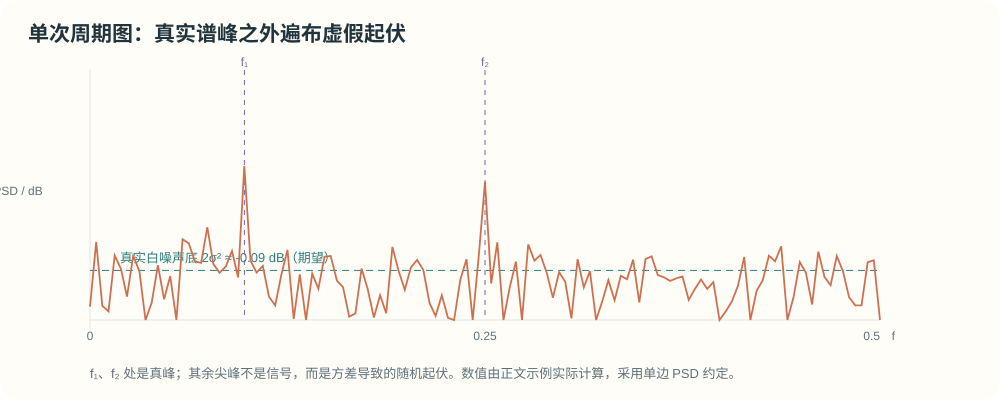
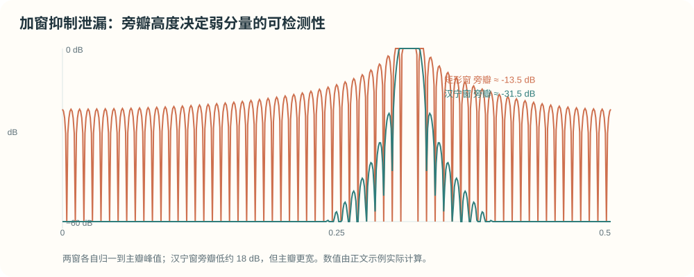
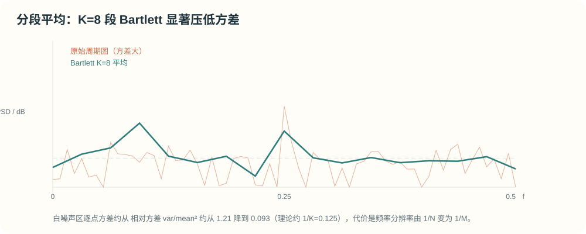
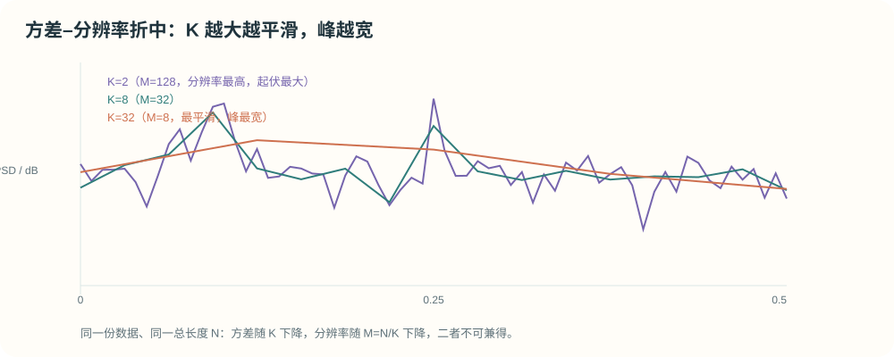

CHAPTER 23 · 统计推断与应用
经典功率谱估计
维纳–辛钦定理给出 PSD 与自相关函数的严格对应，但那要求无限长数据与已知统计量。实践中只有一段有限样本：如何从它估计功率谱？经典方法给出的是以“偏差—方差—分辨率”为轴的折中。
- 写出周期图的定义并说明其单边 PSD 约定与归一化
- 解释周期图为什么渐近无偏却方差不随 N 下降（不一致）
- 说明加窗如何用主瓣宽度换取旁瓣泄漏抑制
- 比较 Bartlett、Welch、Blackman-Tukey 的方差—分辨率折中
从维纳–辛钦定理到有限数据
维纳–辛钦定理说，宽平稳过程的功率谱密度是自相关函数的傅里叶变换：Sxx(f)=∫Rxx(τ)e−j2πfτdτ。它是精确的，但前提是无限长的观测与已知的 Rxx(τ)。拿到一段长度为 N 的实测序列后，三个现实缺口立刻出现。
- 有限长度：只有 x[0…N−1]，等效于给无限长信号乘了一个矩形窗。
- 单次实现：数据只是随机过程的一条样本路径，不是整个概率模型。
- 未知自相关：Rxx(τ) 本身要从同一段有限数据中估计。
于是“确定性的变换”变成了“统计估计问题”：我们需要一个估计量 Ŝxx(f)，并考察它的偏差、方差与频率分辨率。本章的核心结论是一条无法绕开的折中——降低方差必然牺牲分辨率。下文用同一组可复现的数值贯穿所有图。
一个完全可计算的模型
为了把差异量化，固定一个具体的离散时间模型。采样率归一化为 fs=1（单位：样本/秒），令
其中 A1=1.0, f1=0.0977，A2=0.6, f2=0.25，相位 φk 取 0；w[n] 是独立同分布零均值高斯白噪声，标准差 σ=0.7。总长 N=256。所有这些参数都是模型假设，不是从数据“估”出来的。
该过程的两侧 PSD 为 Sx(f)=σ²，并在 ±fk 处叠加线谱；折算成单边 PSD（0≤f≤1/2）后，白噪声底为 2σ²=0.98，即约 −0.09 dB。下面的图会反复用这条水平线做“真实值”参照。
约定先说清：本文统一定义在 [0,1/2] 上的单边功率谱密度，单位是“功率/样本率”，横轴单位是“周/样本”。不同软件（如 MATLAB 与 SciPy）的窗口与缩放因子不同，比较前务必对齐归一化。
周期图：定义与归一化
最直接的估计是：对数据做离散傅里叶变换（DFT），取模平方再归一化。对 N 点实数序列，单边周期图定义为
其中频率取 fk=k/N，k=0,…,N/2；当 k≠0 且 k≠N/2 时再乘 2，以把负频率能量并入单边。直觉是：DFT 把信号投影到各频率基上，|XN[k]|² 是该分量的能量，除以 fsN 后成为功率谱密度。
容易验证，当数据是白噪声时 E[P̂xx[k]]→2σ²（单边）——均值对得上，问题出在波动上，下节讨论。DFT 可用 FFT 以 O(N log N) 计算，这是周期图至今仍被广泛使用的原因之一。
偏差与方差：周期图为何“不一致”
对一个均值为 μ、单边谱为 Sx(f) 的宽平稳过程，周期图在各频率点上的渐近行为可以分开看：
第一个式子说明它是渐近无偏的；第二个式子说明方差趋于谱值的平方，与 N 无关。于是相对标准差 √Var/S 趋于 1——无论采多少点，单次周期图在每个频率上都有约 100% 的起伏。这正是“不一致估计”的定义。

注意“渐近无偏”不等于“可以用”：偏差趋于零描述的是大量重复实验的平均。手里只有一条样本路径时，看到的就是图 23.1 那样剧烈起伏的曲线，谱峰以外的尖峰很容易被误认为真实频率成分。
常见误区：“数据越长看得越细，所以越准。”——分辨率随 N 提高（能分开更近的频率），但单次周期图的方差不变。增加 N 只会让频率网格变密，不会让曲线变平滑。
频谱泄漏与加窗
有限长度观测相当于给信号乘上矩形窗。两个同频或近频正弦的乘积之和并不等于各自谱的简单叠加：在频域，截断信号的谱是真实谱与窗谱的卷积，于是线谱能量被“拖”到邻近频点，这叫频谱泄漏。
矩形窗的窗谱是 Dirichlet 核，第一旁瓣只比主瓣低约 13 dB；若一个弱分量恰好落在强分量的旁瓣下，就会被淹没。换成旁瓣衰减更快的窗（汉宁窗、汉明窗、Blackman 窗等）可以压低泄漏，代价是主瓣变宽，即分辨率下降。

| 窗 | 主瓣宽（bin） | 最高旁瓣 | 适用 |
|---|---|---|---|
| 矩形 | ≈0.9 | −13 dB | 分辨率优先，泄漏不敏感 |
| 汉宁 | ≈1.4 | −31 dB | 通用默认，低泄漏 |
| 汉明 | ≈1.3 | −43 dB | 旁瓣最低但衰减慢 |
分段平滑：Bartlett、Welch、Blackman-Tukey
降低方差的根本手段是平均。Bartlett 的想法最直接：把 N 点数据切成 K 段、每段 M=N/K 点，分别算周期图再平均。
若各段近似独立，方差降到约 1/K，代价是分辨率由 1/N 降到 1/M。图 23.3 用同一条数据对比原始周期图与 K=8 段平均。

Welch 法在 Bartlett 上做两处改进：每段先加窗（如汉宁窗）抑制泄漏；允许相邻段重叠（常用 50%）以在固定数据量下得到更多段、进一步降方差。重叠意味着各段不再独立，降方差效果低于 1/K，但通常仍明显。Blackman-Tukey 法则先估计自相关再变换：
它等价于对周期图做频域平滑：滞后窗 w[m] 的宽度 L 控制方差-分辨率折中——L 小则平滑强、分辨率低。

| 方法 | 思路 | 方差 | 分辨率 | 复杂度 |
|---|---|---|---|---|
| 周期图 | 直接 |X|²/N | 高，不随 N 下降 | 最高 ≈1/N | O(N log N) |
| Bartlett | K 段平均 | ≈降至 1/K | 降至 ≈1/M | O(N log M) |
| Welch | 分段+加窗+重叠 | 低于 Bartlett（重叠相关） | 略低于 Bartlett | O(N log M) |
| Blackman-Tukey | 自相关→加窗→FFT | 由 L 与窗控制 | 由 L 与窗控制 | O(N+L log L) |
可复现核查
下面用纯 Python（无第三方依赖）重做本文所有关键数值：周期图峰值位置、纯噪声期望、相对方差、Bartlett 降方差、两种窗的旁瓣高度。
import math, random
N = 256
def dft_power(x, k):
re = im = 0.0
for n, v in enumerate(x):
a = -2 * math.pi * k * n / N
re += v * math.cos(a); im += v * math.sin(a)
return re * re + im * im
def periodogram(x):
P = [dft_power(x, k) / N for k in range(N // 2 + 1)]
return [p * 2 if 0 < k < N // 2 else p for k, p in enumerate(P)]
rnd = random.Random(23)
x = [math.cos(2 * math.pi * 0.0977 * n) + 0.6 * math.cos(2 * math.pi * 0.25 * n)
+ 0.7 * rnd.gauss(0, 1) for n in range(N)]
P = periodogram(x)
assert max(range(129), key=lambda k: P[k]) == 25 # 峰值在 f1 对应的 k=25
# 纯噪声 200 次重复的平均，验证单边期望 = 2*sigma^2 = 0.98
acc = 0.0
for s in range(200):
r = random.Random(1000 + s)
Pn = periodogram([0.7 * r.gauss(0, 1) for _ in range(N)])
acc += sum(Pn[2:128]) / 126
assert abs(acc / 200 - 0.98) < 0.08
检查点：示例数据中峰值位置为 k=25（f₁）且 P(25)>P(64)；纯噪声 200 次平均后均为 0.98；纯噪声频点的相对方差 var/mean²≈1.21（理论 1），Bartlett K=8 降到≈0.093（理论 0.125）；矩形窗/汉宁窗第一旁瓣≈−13.5 dB / −31.5 dB。测试文件 examples/test_chapter_23.py 复用同一构造。
边界与陷阱
- 补零不等于提高分辨率。零填充只在频域插值，把曲线变光滑，真正分辨率仍由数据长度与窗主瓣宽度决定。
- 窗是折中，不是免费午餐。汉宁窗把旁瓣压低约 18 dB，但主瓣宽约两倍，且峰值会被“扇贝损失”削弱（最坏情况约 1.4 dB）；具体数值依赖窗类型。
- 重叠段不正交。Welch 的 50% 重叠段彼此相关，方差降低会低于名义的 1/K；实际效果需实验验证。
- 归一化与单位必须对齐。单边/双边、密度/功率、窗功率增益三者任一个弄错，谱幅度就会差常因子。比较不同工具结果前先对齐约定。
- 平稳性前提。经典方法假定记录区间内信号宽平稳；非平稳信号（如频率漂移）的平均周期图会污化真实谱结构。
- 分辨极限。频率分辨率约为 1/(MΔt)，两个间距小于它的分量在经典方法下不可分——即使提高信噪比也无法分开。这正是下一章参数化/子空间方法要解决的问题。
下一章转向现代功率谱估计：用 AR/ARMA 参数模型与子空间方法，在短数据下获得超出 1/(MΔt) 的“超分辨”能力，代价是模型阶数选择与模型失配带来的新风险。
参考与核查依据
- M. S. Bartlett, “Smoothing Periodograms from Time-Series with Continuous Spectra,” Nature, vol. 161, 1948：分段平均（Bartlett 法）的原始来源。
- P. D. Welch, “The Use of Fast Fourier Transform for the Estimation of Power Spectra,” IEEE Trans. Audio and Electroacoustics, 1967：加窗与重叠分段的 Welch 法。
- R. B. Blackman & J. W. Tukey, The Measurement of Power Spectra from the Point of View of Communications Engineering, Dover, 1958：自相关加窗后变换的 Blackman-Tukey 法。
- A. V. Oppenheim & R. W. Schafer, Discrete-Time Signal Processing, 3rd ed., Pearson, 2010：第 10—11 章，周期图、加窗与经典谱估计。
- MIT OpenCourseWare · Signals, Systems and Inference：功率谱密度、周期图与经典估计。
- SciPy · scipy.signal.welch：工程实现中的默认窗、重叠与 scaling='density' 归一化。